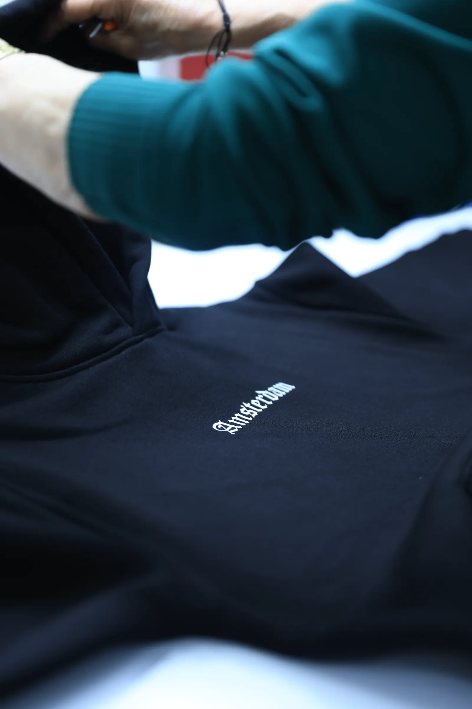
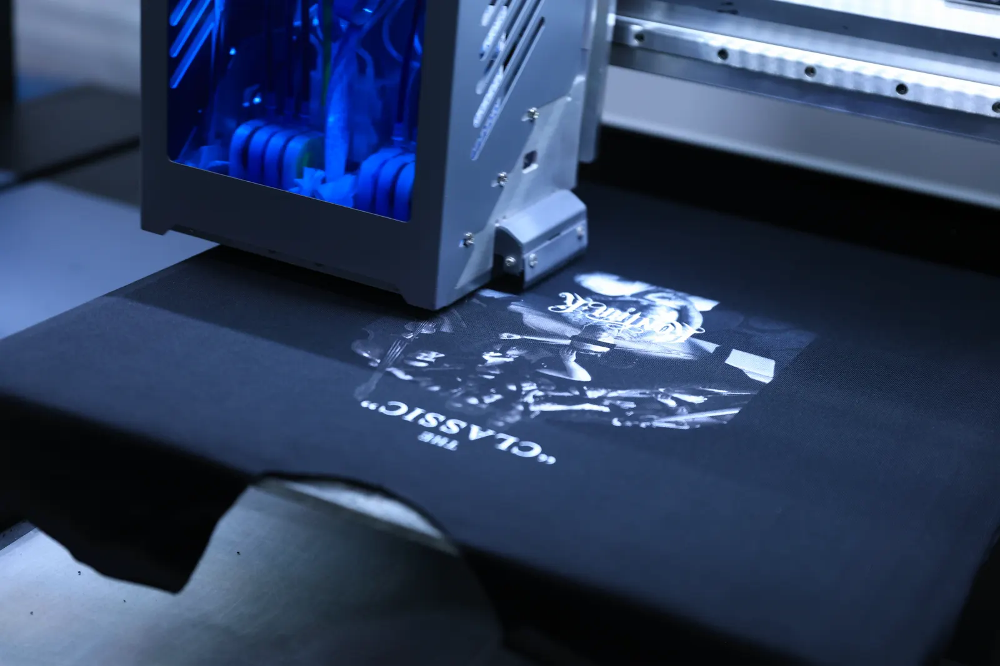

SHOWROOM
Oku takip edin.
Ürünleri keşfedin.
Kumaşların, ürün fikirlerinin ve tamamlanmış giysilerin bir arada görülebildiği alan.
TANDOĞDU TEKSTİLFABRIC · DEVELOPMENT · PRODUCTION
HOŞ GELDİNİZ
Bir yön tabelasından fikirlerle dolu bir alana.
Showroom, üretim hikâyesini somutlaştırır. Ürünleri yakından görebileceğimiz, detayları konuşabileceğimiz ve sıradakini hayal edebileceğimiz yerdir.

MEKÂNÜrünü kendi
Ürünü kendi
ortamında görün.
Bitmiş ürünler; kumaş, baskı, dikim ve son işlemin hikâyesini kelimelerden daha iyi anlatır.
KENDİ MARKAMIZ
Üretimden doğan bir marka.
Murat Tandoğdu showroom’da firmanın kendi markasını ve sergilenen ürünlerin arkasındaki düşünceyi anlatıyor.
MURAT TANDOĞDU · MARKAMIZİÇERİDEN GÖRÜNTÜLER
Daha yakından.
Bu alan, ürün konuşmalarına odaklanmamızı sağlar.




BİRLİKTE ÜRETELİM
Bir fikirle gelin.
Tek bir görselle başlayıp bunun koleksiyona nasıl dönüşebileceğini konuşabiliriz.